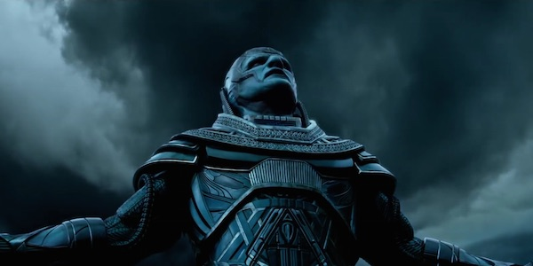
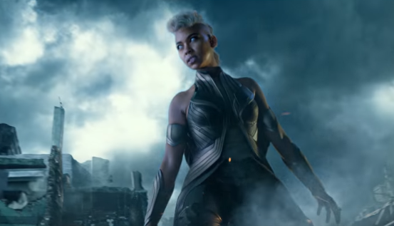

[Review] Dị Nhân Chống Khải Huyền: Kỷ Nguyên Mới Đã Bắt Đầu
Những ai đã xem và cảm thấy thất vọng trước trailer theo kiểu “Mystique và những người bạn” sẽ phải bất ngờ trước một bộ phim X-Men đồng đều về mọi mặt. Có thể nói, X-Men: Apocalypse đã làm được điều mà The Avengers thực hiện rất thành công: khiến mọi anh hùng đều trở nên nổi bật.
Sau khi reboot toàn franchise trong X-Men: Day Of Future Past, X-Men: Apocalypse vẫn có sự xuất hiện của những gương mặt quen thuộc như James Mc Avoy, Michael Fassbender, Jennifer Lawrence, Nicholas Hoult… và tăng cường thêm nhiều diễn viên trẻ. Đạo diễn kiêm biên kịch Bryan Singer tiếp tục đảm nhận trọng trách lớn lao, đưa vũ trụ X-Men trở về với đúng bản chất của nó sau khi bị phá nát ở X-Men: The Last Stand.
Thành công về mặt nội dung của X-Men: Apocalypse không thể không kể đến việc ekip làm phim hay đã phá được cái dớp khó ưa truyền thống của các phim chuyển thể từ comic hãng Marvel, nhân vật phản diện quá dễ đành bại.
Là thủy tổ của các Dị Nhân, sau khi tỉnh dậy từ giấc ngủ ngàn năm, Apocalypse chứng kiến thế giới đổi thay chóng mặt. Nhìn Ai Cập từng là cái nôi của văn hóa nhân loại bị các “siêu cường” vượt qua, chứng kiến những gì mình vất vả xây dựng bị những kẻ “Ngụy Thần” đạp đổ, Apocalypse quyết định thanh tẩy tất cả, đem nhân loại trở về thuở sơ khai. Để rồi từ đống tro tàn của thời đại, hắn sẽ cùng các con cháu Dị Nhân xây nên một thế giới mới đẹp đẽ hơn, tươi sáng hơn và ngập tràn lý tưởng.
Apocalypse mạnh đến vô cùng. Không phải phá hủy vài khu nhà như tên Dị Nhân Sebastian Shaw hay giết chết vài Dị Nhân như những con robot Sentinel, Apocalypse có thể giết người chỉ bằng việc nhấc ngón tay, khiến một thành phố hiện đại trở về thời đại đồ đá trong chớp mắt. Khả năng của hắn thật sự vượt ngoài tất cả những X-Men khán giả từng chứng kiến. Một vị chúa tể đúng nghĩa với khả năng hủy hoại vô cùng kinh khủng.

Oscar Isaac đã thể hiện tốt một Apocalypse bình tĩnh lãnh đạm đầy tố chất lãnh đạo. Tuy nhiên, thật đáng tiếc khi nam diễn viên sở hữu một Quả Cầu Vàng này phải giấu mình sau lớp hóa trang nặng trịch và dầy cộm, đến mức khán giả không thể chứng kiến được nhiều cảm xúc của nhân vật thông qua diễn xuất tài năng của anh. Là kẻ từ đầu đến cuối vẫn luôn nghĩ mình là chúa tể nên lời thoại của Apocalypse “đao to búa lớn” tựa như Đức Chúa trời cứu rỗi vạn vật. Thế nhưng, vì thiếu tính thời đại, chúng trở nên khá hài hước. Apocalypse là một nhân vật phản diện đúng nghĩa nhưng lại không khiến khán giả chán ghét mà phần nào trở thành yếu tố gây cười của phim.
Nhiều năm sau sự kiện tại Nhà Trắng trong X-Men: Days Of Future Past, Magneto của X-Men: Apocalypse khiến khán giả suýt nhầm thành các vai diễn “hành xác” khác của Michael Fassbender. Những ai đã từng yêu quý một Erik Lehnsherr cứng rắn, mạnh mẽ và luôn trung thành với tuyệt đối với lý tưởng của mình sẽ có chút thất vọng khi thấy Magneto vĩ đại đã sa lầy thế nào vào giai đoạn đầu phim.
Người bạn thân thiết của Magneto, giáo sư X cũng không may mắn gì hơn. Anh phải “nai lưng” kiếm cho phim thêm vài cảnh quay lãng mạn gượng ép chẳng kém nụ hôn của Captain và Agent 13 trong Civil War. May mắn là khi phim kết thúc cả giáo sư X và Magneto đều trở về là chính mình. Dẫu tương lai- quá khứ đã đổi thay vì X-Men: Days Of Future Past thì tính cách của Charles Xavier và Erik Lehnsherr cũng như tình bạn tri kỷ giữa họ vẫn không thay đổi.
Sau khi được phô diễn nhiều đến thừa thãi trong X-Men: Days Of Future Past, lần này Mysique của Jennifer Lawrence đã trở lại và lợi hại hơn xưa. Với đất diễn vừa đủ, cô nàng da xanh vừa ấn tượng vừa không khiến khán giả mệt mỏi với một phần phim “Mystique và những người bạn”. Tình cảm của cô nàng và bạn trai cũ Beast cũng được chú trọng nhiều hơn, bù lại cho việc “dìm hàng” Beast khá nhiều trong phần này để làm nổi bật các Dị Nhân trẻ tuổi.
Quicksilver lại một lần nữa “steal the show”, mỗi lần xuất hiện cậu chàng đều khiến khán giả ồ lên tán thưởng. Trong phần này, Quicksilver đã trở thành một nhân vật quan trọng của đoàn Dị Nhân và có nhiều đất hơn để phô diễn tài năng ấn tượng của mình. Mong rằng ekip X-Men sẽ khai thác tốt nhân vật có khả năng tạo đột biến và vô cùng thu hút này. Cũng giống như Quicksilver, Wolverine tuy xuất hiện ít ỏi nhưng lại vô cùng ấn tượng. Những ai còn ghi nhớ đến mối tình tay ba đầy cảm xúc của Cyclops, Jean Grey và Wolverine trong các phần trước hẳn sẽ thích thú vì một trường đoạn hội ngộ ấn tượng của họ trong phim.
X-Men: Apocalypse là cột mốc đánh dấu dàn diễn viên trẻ đã debut thành công. Vẫn còn nhiều thiếu sót khi Storm ít đất diễn, Clyclops và Jean đôi chỗ diễn khá cứng nhưng họ đều đã làm tốt nhiệm vụ của mình. Sau khi bị “dìm hàng” để tôn vinh Wolverine ở các phần trước, các Dị Nhân trẻ tuổi đều được trả lại sức mạnh vốn có. Đặc biệt, Nightcrawler khá mờ nhạt trước đây đã được recast trẻ trung và đáng yêu đến bất ngờ.

Tràn ngập kịch tính từ đầu chí cuối, X-Men: Apocalypse không để người xem nghỉ ngơi một phút nào suốt gần hai tiếng rưỡi thời lượng phim. Các trận đánh diễn ra liên tục đến “không kịp thở”. Góc quay đẹp, hình ảnh được đầu tư và kỹ xảo vô cùng mãn nhãn, phần nào khiến khán giả nhớ tới cảnh phim huyền thoại ở Golden Gate trong X-Men: The Last Stand.
Nhạc phim ghi điểm qua bàn tay tài ba của John Ottman từng đảm nhận của X-Men 2 và X-Men: Days Of Future Past. Đặc biệt là ở đoạn cuối phim khi tất cả cảm xúc được đẩy lên cao trào bởi những giai điệu bi tráng. Lời thoại cũng là một điểm sáng của X-Men: Apocalypse. Chúng đa sắc thái, có hài hước, có ấn tượng và có cả những câu thoại đa nghĩa có thể khiến người xem bật cười nhưng chỉ có fan “ruột” mới hiểu được.
Dẫu có rất nhiều điểm đáng khen thì X-Men: Apocalypse vẫn không thể tránh khỏi những thiếu sót. Điều rõ ràng nhất là vai trò và khả năng của tứ kỵ sĩ do đích thân Apocalypse tuyển chọn chẳng mấy quan trọng. Trừ Magneto được “thể hiện” và đào sâu tâm lý thì Storm, Angel và Psylocke dường như chỉ có mặt cho vui chứ chẳng để lại dấu ấn gì. Ngoài ra, dù thời lượng phim ngày càng kéo dài nhưng vẫn có nhiều điểm chưa giải thích rõ ràng – điển hình là sự xuất hiện và biến mất nhanh chóng không lời giải thích của William Stryker.
Là phần cầu nối X-Men trong quá khứ và X-Men được “thay máu” hoàn toàn, X-Men: Apocalypse đã làm tốt vai trò của mình. Tuy nhiên, để vũ trụ Dị Nhân tiếp tục thu hút khán giả trong tương lai, hãng FOX vẫn còn rất nhiều điều phải làm, trước mắt là bộ phim debut của Gambit và phần 2 của tên anti hero lắm chuyện nhất mọi thời đại – Deadpool.